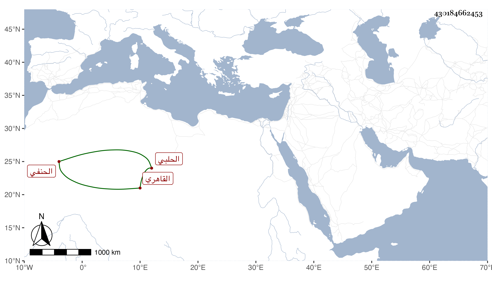

0902Sakhawi.DawLamic.ITO20230111-ara1.EIS1600.430184662453
Biography ID: 430184662453
687
محمد بن عمر بن علي المحب بن السراج الحلبي الأصل القاهري الحنفي خادم ناصر الدين بن عشائر ونزيل قناطر السباع ويعرف بابن البابا ذكره شيخنا في معجمه وقال أنه اشتغل بالعلم وذكر لي أنه حضر دروس البهاء بن عقيل ومهر في الفقه ، وضعف بصره بأخرة ووجدت له سماعا على أبي الحرم القلانسي وناصر الدين الفارقي في المعجم الصغير للطبراني وعلى ثانيهما فقط جزء من حديث ابن أبي الصقر وحنبل بن إسحق وسماعه له بقراءة شيخنا العراقي ، وأجاز له العز أبو عمر بن جماعة ، كتب لنا في إجازة ابني محمد . ومات سنة تسع عشرة ، وتبعه المقريزي في عقوده . وممن سمع منه ابن موسى ورفيقه الأبي الموفق .
